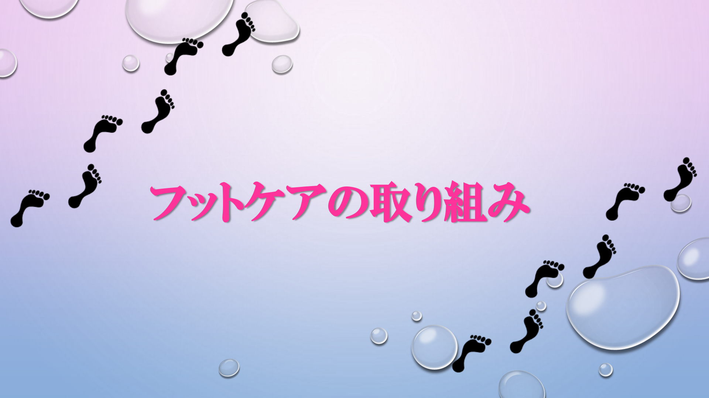

毎日のチェックポイント
毎日足を観察し、以下のような変化がないか確認しましょう。
- 皮膚の状態: 色が悪くなっていないか（蒼白や紫黒色）、乾燥やひび割れ、水虫（白癬）がないか。
- 傷や炎症: 小さな傷、赤み、腫れ、膿が出ていないか。
- 痛み・しびれ: じっとしていても痛む、あるいは感覚が鈍くなっていないか。
- 爪の状態: 深爪、巻き爪、変形、割れがないか。
- たこ・うおのめ: 硬くなっている部分や、その周囲に赤みがないか。
具体的なケアの方法
- 清潔を保つ: 毎日足を丁寧に洗い、指の間までしっかり乾かします。
- 保湿: 入浴後など、乾燥を防ぐために保湿クリームを使用します。
- 正しい爪切り: 深爪を避け、先端をまっすぐに切り（スクエアカット）、角を少し丸める程度に整えます。
- 足を保護する: 裸足で歩かず、必ず靴下を履きましょう。靴下は締め付けの少ない清潔なものを選びます。
- 靴選び: 足に合ったサイズで、靴ずれしにくいものを選びます。履く前に靴の中に異物がないか確認することも大切です。
- やけど予防: 感覚が鈍くなっている場合があるため、こたつ、電気毛布、カイロなどによる低温やけどに注意してください。
医療機関への相談
自分での処置が難しい爪切りや、たこ・うおのめの除去は、無理をせず透析施設のスタッフに相談してください。
特に、傷が治りにくい、痛みがある、足が冷たいなどの症状がある場合は早急な受診が必要です。
当院で実施しているフットケア
- 定期的なフットチェック（月１回）
- 皮膚の観察: 乾燥、亀裂、水虫（白癬）、発赤、タコ、ウオノメの有無を確認します。
- 血流・感覚の確認: 足の動脈の拍動（足背動脈など）の触知や、冷感・しびれの有無をチェックします。
- 検査
ABI（足首と腕の血圧比）測定を行い、血管の詰まり具合を評価します。血流障害が疑われる場合は連携施設を紹介し、早期治療につなげていきます。 - 専門的な処置
- 爪のケア: 肥厚した爪の削りや、巻き爪を予防するためのスクエアカットなど、自分では難しい爪切りを行います。
- 角質管理: タコやウオノメの除去を行い、圧迫による皮膚トラブルを防ぎます。
- 洗浄・保湿: 足浴で清潔を保ち、保湿剤を塗布してバリア機能を維持します。
- セルフケア指導
自宅での観察ポイント、適切な靴・靴下の選び方、正しい爪切りの方法などをレクチャーします。
📖 ガイドブックを見る
詳しいケア方法をPDFで確認できます。写真をタップしてください。

タップして開く
💡 ご相談ください
足のことで気になることがあれば、遠慮なくスタッフにお声がけください。